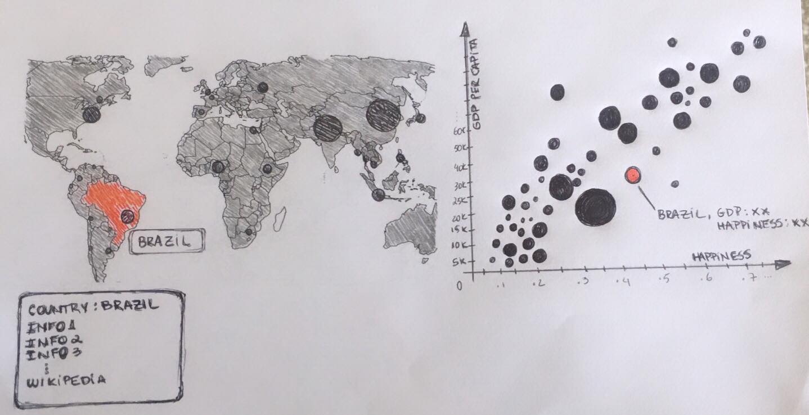
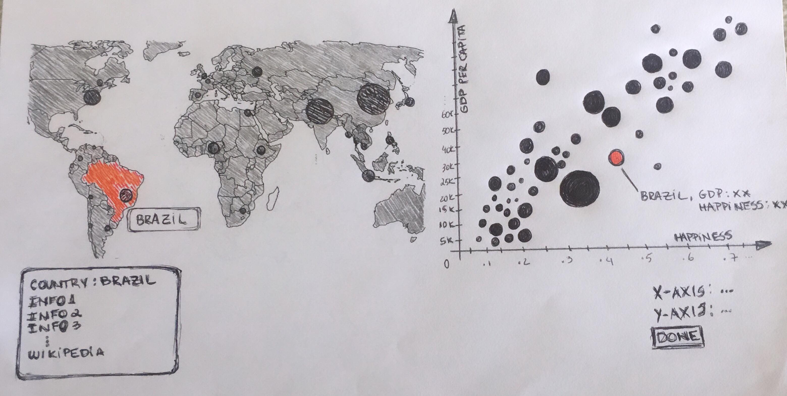
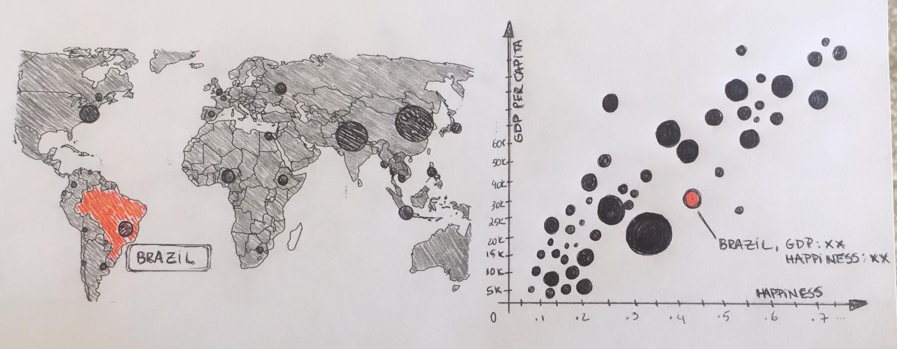

For this assignment, our group decided to explore The World Happiness Report, which is a survey released by the United Nations on March 20th - official “Day of Happiness”. The report ranks more than 150 countries by their happiness level - thus reviewing the current state of happiness in today’s society - and it is a widespread data tool used to support policy-making decisions and understand how well-being plays a role in nation progress.
The main happiness score was computed using the “Candrill Ladder of life” and the data from the Gallup World Poll: a nationally representative sample of people who were asked to rank their life from 0 (worst) to 10 (great) for the years 2013-2016 using Gallup weights. The data also contained extra six factors: economic production, social support, life expectancy, freedom, absence of corruption, and generosity - which scores were based on how these factors contribute to making life evaluations higher in each country compared to a hypothetical country with lowest national averages for all factors (let’s call it Distopya).

Our team was curious to understand what drives happiness, and more specifically, whether wealth in its most basic concept - money - is correlated with happiness. Our main assumption is that higher-income results in higher well-being, which consequently brings happiness. To evaluate this hypothesis, we merged to the dataset GDP per capita - which should translate into an average income per person given different countries. Although we understand and anticipate some statistical issues - like GDP per capita does not consider income distribution/gap - we believe it would be a great visualization exercise to understand the correlation, code areas and plot different variables into a map.
Our initial idea was to build an interactive visualization composed of two main parts: a map and a scatterplot. Both would connect by the key “country”. The map would encode geographic location, population size (bubble size) and capital name; and the scatterplot would display the relationship between GDP per capita and happiness score. In this way, we could observe the correlation by analyzing trends in the scatterplot:
The idea was, once the user clicks on a map capital, the correspondent country should be highlighted on the scatterplot! Then, we added a couple of extra ideas: why not add in extra information about each of the countries? To do so, we added Wikipedia page to our dataset and every time a user clicked in a capital, it would not only highlight its respective place in the scatterplot, but also a box would pop up with information about the country and a direct link to its Wikipedia page.
Finally, we decided to add on the other available data to the scatterplot, thus creating an interface where the user would be able to choose which axis would contain each possible data - enabling people to explore all facets of the “The World Happiness Report”: happiness rank, Family-friendly, freedom, and generosity.
